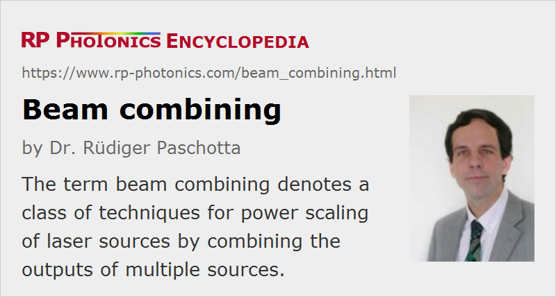

Beam Combining
Definition: a class of techniques for power scaling of laser sources by combining the outputs of multiple devices
More specific terms: coherent beam combining, spectral beam combining, polarization beam combining
How to cite the article; suggest additional literature
Author: Dr. Rüdiger Paschotta
Various laser architectures allow the development of high-power laser sources with high beam quality, i.e., high radiance (brightness). However, all of these approaches have their limitations, and some envisaged laser applications would require a higher laser power and brightness than appears to be feasible with any known laser technology. Another problem is that very high-power laser systems are developed and built only in small numbers, making the devices fairly expensive.
A viable solution to these challenges could be the principle of beam combining, which essentially means combining the outputs of multiple laser sources (often in the form of laser arrays) so as to obtain a single output beam. The use of a scalable beam-combining technology leads to a power-scalable laser source, even if the single lasers are not scalable.
The goal of beam combining is generally not only to multiply the output power, but also to preserve the beam quality, so that the radiance is increased (nearly) as much as the output power. Therefore, it is generally not sufficient, e.g., to combine mutually incoherent beams side by side, because this would increase the beam area while not decreasing the beam divergence, consequently increasing the beam parameter product and reducing the beam quality.
There are many different approaches for beam combining with increased brightness, but these can all be grouped into one of two categories:
- Coherent beam combining works with beams which are mutually coherent. Coherent polarization beam combining is one variant; other techniques are side-by-side combining and filled-aperture combining. In the conceptually simplest case, monochromatic beams with the same optical frequency are combined. However, some schemes of coherent beam combination work with emission on multiple frequencies, with the emission spectra of all emitters being the same. That technique can also be applied to broadband ultrashort pulses.
- Spectral beam combining (also called wavelength beam combining or incoherent beam combining) does not require mutual coherence, but rather uses emitters with non-overlapping optical spectra. The single beams are then fed into a wavelength-sensitive beam combiner, such as a prism, a diffraction grating, a dichroic mirror, or a volume Bragg grating.
These techniques are discussed in more detail in the corresponding articles. They can be applied to various laser sources, e.g., based on laser diodes (particularly diode bars) and fiber amplifiers, but also to high-power solid-state bulk lasers and VECSELs.
Comparison of Coherent and Spectral Beam Combining
Coherent and spectral beam combining techniques are substantially different in various respects:
- Spectral beam combining has the great advantage of not requiring mutual temporal coherence of the combined beams. This eliminates some important technical challenges and makes it much easier to obtain stable operation at high power levels. It may also be beneficial that a stable polarization is not required in principle, although e.g. the use of diffraction gratings often reintroduces this requirement.
- If fiber amplifiers are used, the requirement of single-frequency operation, which is associated with some techniques of coherent combining, makes it more difficult to reach high power levels, because it favors nonlinear effects such as stimulated Brillouin scattering.
- Spectral beam combining inevitably generates output beams with several (or many) spectral components, thus spanning a significant optical bandwidth. This means that the spectral brightness is even reduced compared with that of the single emitters. This does not matter for some applications while excluding others, where a narrow-bandwidth output is required.
- At least compared with tiled-aperture techniques of coherent beam combining, spectral beam combining makes it easier to combine the beams without any significant loss of beam quality.
- Spectral beam combining is also superior in terms of more graceful degradation, because the failure of one emitter simply reduces the output power accordingly, whereas in the case of tiled-aperture coherent beam combining it also affects the output beam quality and thus reduces the output brightness even more than the power.
In conclusion, it is to be expected that methods of spectral beam combining will find more widespread application, although coherent methods will in some cases be required, e.g. due to constraints concerning the optical spectrum.
Applications
It is expected that beam-combined laser systems will in the near future reach output power levels of tens to hundreds of kilowatts. Possible applications of such systems are often in the military sector, e.g., in the context of anti-missile and other directed energy laser weapons. There are also possibilities for long-distance free-space optical communications [1] and laser-based manufacturing.
Suppliers
The RP Photonics Buyer's Guide contains 32 suppliers for beam combining optics. Among them:
Questions and Comments from Users
Here you can submit questions and comments. As far as they get accepted by the author, they will appear above this paragraph together with the author’s answer. The author will decide on acceptance based on certain criteria. Essentially, the issue must be of sufficiently broad interest.
Please do not enter personal data here; we would otherwise delete it soon. (See also our privacy declaration.) If you wish to receive personal feedback or consultancy from the author, please contact him e.g. via e-mail.
By submitting the information, you give your consent to the potential publication of your inputs on our website according to our rules. (If you later retract your consent, we will delete those inputs.) As your inputs are first reviewed by the author, they may be published with some delay.
Bibliography
| [1] | G. S. Mecherle, “Laser diode combining for free space optical communication”, Proc. SPIE 616, 281 (1986), doi:10.1117/12.961064 |
| [2] | T. Y. Fan, “Laser beam combining for high-power, high-radiance sources”, JSTQE 11 (3), 567 (2005), doi:10.1109/JSTQE.2005.850241 (review paper) |
| [3] | Special issue on beam combining: IEEE Sel. Top. Quantum Electron. 15 (2) (2009) |
See also: coherent beam combining, spectral beam combining, power scaling of lasers, high-power lasers, high-power fiber lasers and amplifiers, coherence
and other articles in the categories lasers, methods
|  |
If you like this page, please share the link with your friends and colleagues, e.g. via social media:
These sharing buttons are implemented in a privacy-friendly way!